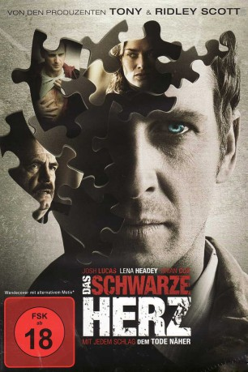
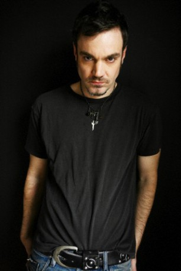
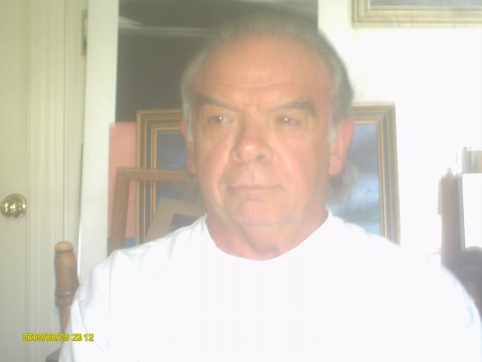
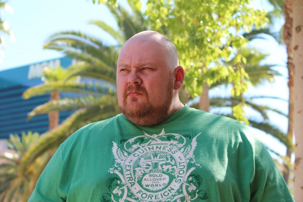
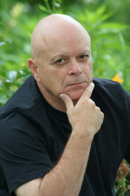

#8181 Das Schwarze Herz
Alternativ: Tell Tale (Englischer Titel)
 
 IMDB-Wertung: 5.5 / 10
IMDB-Wertung: 5.5 / 10  Metascore: 0
Metascore: 0 
Nach einer Herztransplantation erholt sich der junge Vater Terry prächtig. Wenn da nicht diese furchtbaren Halluzinationen wären, die ihn seit kurzem befallen. Die Ärztin seiner sterbenskranken Tochter steht ihm bei, als sich seine Mordvisionen als überaus wirklich herausstellen. Terry findet heraus, dass sein Spender samt Familie brutal ermordet wurde. Ihm und Detective Van Doren kommt der Verdacht, dass sein Organ auf Rache an den Mördern aus ist. Und danach aufhören wird zu schlagen.
Jahr: 2009
Dauer: 92 Minuten
FSK: 18
Land: England Studio: SquareOne EntertainmentTonspuren: DTS - ,
Untertitel: Deutsch,
Auflösung: 1080p (1920x800) Größe: 6400 MB
Genre: Thriller, Horror, Drama, Sci-Fi
Regisseur: Michael Cuesta
Drehbuch: Dave Callaham
Soundtrack: David Buckley
Darsteller:
 Josh Lucas als Terry Bernard
Josh Lucas als Terry Bernard Lena Headey als Elizabeth Clemson
Lena Headey als Elizabeth Clemson Brian Cox als Phillip Van Doren
Brian Cox als Phillip Van Doren Bea Miller als Angela Bernard
Bea Miller als Angela Bernard-  Jamie Harrold als Kevin Stanovich
 Michael Kenneth Williams als Acherton
Michael Kenneth Williams als Acherton Pablo Schreiber als Bernard Cochius
Pablo Schreiber als Bernard Cochius Tom Riis Farrell als Legethon
Tom Riis Farrell als Legethon Ulrich Thomsen als Doctor Lethe
Ulrich Thomsen als Doctor Lethe Dallas Roberts als The Surgeon
Dallas Roberts als The Surgeon- Cassandre Fiering als Frances Vieillard
 Tom Kemp als Detective Hatzis
Tom Kemp als Detective Hatzis- Julia Ryan als Museum Docent
- Emily Camara Boisseau als The Babysitter (uncredited)
- Seth Chitwood als Boy with Dog (uncredited)
-  John Franchi als Janitor (uncredited)
- Andrea Leon als (uncredited)
- Kristi Lynn als Nurse (uncredited)
 Dan Marshall als Pedestrian Witness of River Murder (uncredited)
Dan Marshall als Pedestrian Witness of River Murder (uncredited)-  Rich Skinner als Construction Worker (uncredited)
- Darya Zabinski als Pedestrian (uncredited)
- Peg Holzemer als Elderly Woman In Wheelchair
- Scott Winters als Doctor Averman
- Kara Lund als Nurse
- John Timothy Botka als Police Officer
- Allison Alexander als Newscaster
- Emilio Cuesta als Smarty Pants
- Matthew E. Chausse als Cochius Family Member
- Ellen Becker-Gray als Pedestrian Witness of River Murder (uncredited)
- Gail Bruno als Nurse (uncredited)
- Desiree April Connolly als Nurse (uncredited)
- D.W. Cormier als Orderlie (uncredited)
- Roger Dillingham Jr. als Paramedic (uncredited)
- Vincent J. Earnshaw als Vinnie the Bartender (uncredited)
- Susan Farese als Pedestrian (uncredited)
 Keith Fluker als OR Surgeon (uncredited)
Keith Fluker als OR Surgeon (uncredited)- Victor Franko als Mourner (uncredited)
-  Albert Gornie als Organ Transport Doctor (uncredited)
- Patrick Mel Hayes als Police Officer (uncredited)
- Michael Kelly als Police Officer (uncredited)
- Paul Locke als Police Officer (uncredited)
- Robert Masiello als Detective (uncredited)
- Todd Mello als Orderly (uncredited)
- Sabe Schoeneg als Father of Schoolgirls (uncredited)
- Kevin M. Simon als Paramedic (uncredited)
- Ben Skinner als Orderly (uncredited)
- David Struffolino als Doctor (uncredited)
Datei: X:\FSK18-2000-2009\Schwarze Herz, Das (2009, FSK18, 1920x800).mkv seit 07.02.2018
Festplatte: FSK18
 Es gibt insgesamt 106 Filme in der Gruppe 'FSK18-2000-2009'
Es gibt insgesamt 106 Filme in der Gruppe 'FSK18-2000-2009'